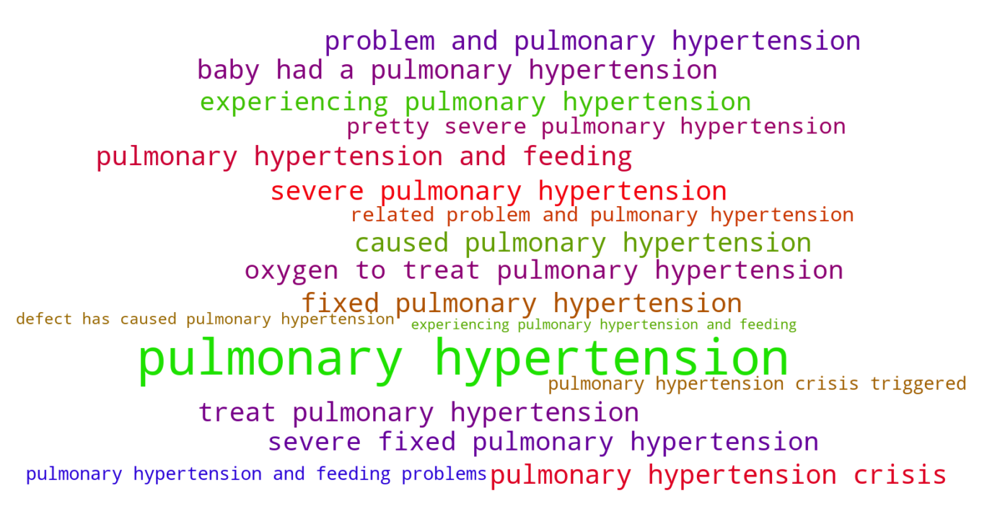
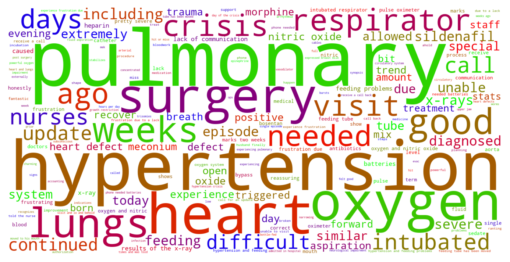

Jump to section:
Samples from Social CorpusHits per UMLS Alias on Social Corpus
Word Cloud Comparison
Embedding Space Comparison
Nearest Neighbors by Semantic Type
Related Analysed Concepts
Samples from Social Corpus
He's heart defect has caused pulmonary hypertension , which is why they are doing surgery now and not waiting longer .
Confidence: 0.742. Reddit link
He has pulmonary hypertension along with a hole in his heart , under developed lungs and his kidneys are currently not functioning .
Confidence: 1.000. Reddit link
She also had pulmonary hypertension and she is now on medication for that .
Confidence: 1.000. Reddit link
post surgery trauma and care in 16 month old baby Dear all , our 16 month old daughter is admitted in hospital due to complications in her heart and lungs ( ASD , PAPVC , Mitral Valve related problem and pulmonary hypertension ) she had successful surgery on 30th Aug and she is under recovery now .
Confidence: 0.761. Reddit link
She has BPD / chronic lung disease , mild pulmonary hypertension , and an ASD .
Confidence: 1.000. Reddit link
He was born via c-section and sent to the special care nursery for oxygen to treat pulmonary hypertension , followed by the NICU for jaundice .
Confidence: 0.793. Reddit link
Sildenafil and Bosentan for Pulmonary Hypertension My 23 weeker ( who is now 47 weeks gestational ) still has an open PDA and pulmonary hypertension .
Confidence: 1.000. Reddit link
They also are planning to do a catheter surgery to close her PDA , but before that her pulmonary hypertension needs to be under control .
Confidence: 1.000. Reddit link
Question to NICU Nurses My baby had a pulmonary hypertension crisis triggered by incubation .
Confidence: 0.751. Reddit link
* Unfortunately , the mek aspiration triggered some pretty severe pulmonary hypertension .
Confidence: 0.782. Reddit link
Hits per UMLS Alias on Social Corpus
-
pulmonary hypertension
30 hits
-
pht pulmonary hypertension
0 hits
-
hypertension pulmonary
0 hits
-
pulmonary hypertension disorder
0 hits
-
pulmonary hypertension nos
0 hits
-
hypertensive pulmonary vascular disease
0 hits
-
hypertension caused by lung disease
0 hits
Word Cloud Comparison
Keywords matching C0020542
Keywords matched against concept. Word size represents frequency.
Keywords co-occurring with C0020542
Co-occurrence is measured at the document-level (i.e. Reddit submissions). Frequencies are normalized to account for keywords common to all CUIs.
Embedding Space Comparison
T-SNE comparison for word embeddings learned from medical domain (EuroPMC) and social media (Reddit) independently.
Pearson correlation for union of closest 1000 neighbors: 0.006
Nearest Neighbors by Semantic Type
Most similar concepts in each of the selected UMLS semantic types. Based on concept embeddings from social corpus.
T046 (Pathologic Function)
-
C0020542
Pulmonary hypertension
1.000 Similarity
-
C0341934
Gestational hypertension
0.845 Similarity
-
C0034065
Pulmonary embolism
0.819 Similarity
-
C0341950
Severe preeclampsia
0.781 Similarity
-
C0269658
Mild pre eclampsia
0.747 Similarity
-
C0032914
Pee
0.747 Similarity
-
C0156677
Eclampsia pregnancy
0.721 Similarity
-
C0013922
Embolism
0.713 Similarity
T047 (Disease or Syndrome)
-
C1696708
Pre hypertension
0.901 Similarity
-
C0597854
Renin induced hypertension
0.882 Similarity
-
C0852036
Pregnancy induced hypertension
0.876 Similarity
-
C0565599
Hypertension pregnancy
0.856 Similarity
-
C0020538
High blood pressure
0.824 Similarity
-
C0262534
Syndrome white coat
0.783 Similarity
-
C0013537
Eclampsia
0.711 Similarity
-
C0878544
Cardiomyopathy
0.710 Similarity
T023 (Body Part, Organ, or Organ Component)
-
C0034052
Pulmonary arteries
0.812 Similarity
-
C0034086
Pulmonary valve
0.811 Similarity
-
C0024109
Lung
0.707 Similarity
-
C0026264
Mitral valve
0.624 Similarity
-
C0003842
Artery
0.611 Similarity
-
C0524422
Atria
0.593 Similarity
-
C0545792
Kidney liver
0.590 Similarity
-
C0018787
Heart
0.582 Similarity
T060 (Diagnostic Procedure)
-
C0033053
Prenatal diagnoses
0.712 Similarity
-
C0011900
Diagnosed
0.631 Similarity
-
C0871813
Medical diagnosis
0.622 Similarity
-
C0596473
Detection early
0.620 Similarity
-
C1882082
New diagnosis
0.619 Similarity
-
C0199229
Diabetes screening
0.602 Similarity
-
C0920688
Cancer diagnosis
0.601 Similarity
-
C0150496
Heart monitoring
0.596 Similarity
T201 (Clinical Attribute)
-
C0442709
End diastolic
0.671 Similarity
-
C0012000
Diastolic
0.614 Similarity
-
C0012655
Predisposition
0.556 Similarity
-
C0007165
Heart output
0.552 Similarity
-
C0429622
Oxygen supply
0.531 Similarity
-
C0231832
Breathing rate
0.515 Similarity
-
C3174092
Medication dose
0.506 Similarity
-
C1286057
Completeness placenta
0.500 Similarity
T079 (Temporal Concept)
-
C0039155
Systolic
0.671 Similarity
-
C0439671
Gestational
0.654 Similarity
-
C2936491
Peripartum
0.596 Similarity
-
C0439588
Acute chronic
0.578 Similarity
-
C0178795
Perinatal
0.554 Similarity
-
C0205191
Chronic
0.552 Similarity
-
C4025592
Late onset
0.552 Similarity
-
C0814007
Pregnancy stage
0.538 Similarity
T061 (Therapeutic or Preventive Procedure)
-
C0020674
Hypothermia induced
0.650 Similarity
-
C0473288
Stabilising induction
0.614 Similarity
-
C0455040
Induction vomiting
0.588 Similarity
-
C1314130
Blood measuring pressure
0.583 Similarity
-
C0193373
Liver surgery
0.581 Similarity
-
C0040590
Tracheotomy
0.580 Similarity
-
C0023911
Liver transplant
0.569 Similarity
-
C0849164
Blood medication
0.567 Similarity
T048 (Mental or Behavioral Dysfunction)
-
C0338927
Hospitalism
0.641 Similarity
-
C0013415
Dysthymia
0.630 Similarity
-
C0038436
Ptsd
0.609 Similarity
-
C0038441
Stress disorder
0.603 Similarity
-
C0236792
Aspergers disease
0.561 Similarity
-
C0030319
Panic disorder
0.557 Similarity
-
C0596344
Clinical anxiety
0.555 Similarity
-
C0234985
Cognitive decline
0.549 Similarity
T032 (Organism Attribute)
-
C0017504
Gestational age
0.635 Similarity
-
C1954788
Gestational age weeks
0.604 Similarity
-
C0805393
Breathing spontaneous
0.504 Similarity
-
C0751992
Fetal weight
0.493 Similarity
-
C0005890
Stature
0.479 Similarity
-
C0019425
Heterozygous
0.475 Similarity
-
C0005612
Weight baby
0.469 Similarity
-
C0949285
Antibiotic resistance
0.466 Similarity
T034 (Laboratory or Test Result)
-
C5201036
Low platelets
0.634 Similarity
-
C0241988
M spike
0.622 Similarity
-
C2266672
Clotting time finding
0.579 Similarity
-
C0580944
Lying blood pressure
0.541 Similarity
-
C0428309
Magnesium blood
0.530 Similarity
-
C0428554
Blood glucose levels
0.528 Similarity
-
C0580945
Blood pressure standing
0.526 Similarity
-
C1261430
Fasting blood sugar
0.514 Similarity
T042 (Organ or Tissue Function)
-
C0005778
Clotting
0.631 Similarity
-
C4250378
Neural induction
0.572 Similarity
-
C1325917
Organ induction
0.565 Similarity
-
C0232102
Blood fluidity
0.557 Similarity
-
C0232741
Liver function
0.544 Similarity
-
C4244173
Gestational development process
0.539 Similarity
-
C0032058
Placentation
0.534 Similarity
-
C0232804
Kidney function
0.533 Similarity
T101 (Patient or Disabled Group)
-
C0682161
Dually diagnosed
0.630 Similarity
-
C0008098
Child hospitalized
0.597 Similarity
-
C0871503
Dying patients
0.542 Similarity
-
C0748064
Inpatient psychiatric
0.525 Similarity
-
C0029921
Outpatient
0.523 Similarity
-
C0021562
Inpatient
0.514 Similarity
-
C0233363
Monoamniotic twins
0.496 Similarity
-
C1516213
Cancer patient
0.484 Similarity
T019 (Congenital Abnormality)
-
C0018817
Asd
0.616 Similarity
-
C0000768
Birth defect
0.615 Similarity
-
C0152021
Congenital heart disease
0.585 Similarity
-
C0018798
Heart defect
0.581 Similarity
-
C0027794
Neural tube defect
0.569 Similarity
-
C0003492
Coarctation
0.566 Similarity
-
C0266449
Brain malformation
0.560 Similarity
-
C0243066
Atresia
0.556 Similarity
T190 (Anatomical Abnormality)
-
C4025734
Anomaly scalp
0.607 Similarity
-
C0266785
Umbilical cord issue
0.559 Similarity
-
C3887590
Stricture ureter
0.533 Similarity
-
C0016169
Sinus
0.523 Similarity
-
C0332447
Anomaly
0.512 Similarity
-
C0302142
Anatomic abnormality
0.505 Similarity
-
C0019294
Inguinal hernia
0.496 Similarity
-
C0269852
Previa vasa
0.496 Similarity
T059 (Laboratory Procedure)
-
C0368930
Clotting time
0.604 Similarity
-
C0032181
Platelet count
0.572 Similarity
-
C0018941
Blood test
0.557 Similarity
-
C0023901
Liver tests
0.549 Similarity
-
C0428568
Fasting blood glucose
0.543 Similarity
-
C0023508
White blood cells
0.542 Similarity
-
C1456823
Urine screening glucose
0.524 Similarity
-
C0850355
Pregnancy blood test
0.524 Similarity
T184 (Sign or Symptom)
-
C0231243
Complications early
0.594 Similarity
-
C0333243
Pitting edema
0.594 Similarity
-
C2957106
Severe headache
0.563 Similarity
-
C0270697
Headache spinal
0.560 Similarity
-
C0238740
Severe back pain
0.559 Similarity
-
C0558489
Renal pain
0.558 Similarity
-
C0700200
Presyncope
0.557 Similarity
-
C0565619
Fetal distress labor
0.549 Similarity
T018 (Embryonic Structure)
-
C0553498
Gestational sac
0.593 Similarity
-
C0041632
Umbilical artery
0.535 Similarity
-
C0553522
Cord placenta umbilical
0.524 Similarity
-
C0041637
Umbilical vein
0.520 Similarity
-
C0440731
Fetal brain
0.508 Similarity
-
C0015935
Fetal heart
0.477 Similarity
-
C0041633
Umbilical cord
0.468 Similarity
-
C0032043
Placenta
0.465 Similarity
T005 (Virus)
-
C3743464
Mycobacteriophage whirlwind
0.578 Similarity
-
C3768023
Mycobacteriophage conspiracy
0.476 Similarity
-
C0597404
Respiratory virus
0.469 Similarity
-
C4415400
Phage wrath
0.444 Similarity
-
C5058350
Fairfax lookout virus
0.422 Similarity
-
C0086776
Parvovirus
0.399 Similarity
-
C0206419
Coronavirus
0.392 Similarity
-
C0205939
Cold virus common
0.392 Similarity
T031 (Body Substance)
-
C0162371
Cord blood
0.568 Similarity
-
C0007806
Spinal fluid
0.564 Similarity
-
C0005767
Blood
0.548 Similarity
-
C0440739
Mixed venous blood
0.528 Similarity
-
C0225379
Upper respiratory fluid
0.498 Similarity
-
C0242216
Gall stones
0.494 Similarity
-
C0005388
Bile
0.486 Similarity
-
C0439057
Early morning urine
0.483 Similarity
T074 (Medical Device)
-
C0179931
Aorta clamped
0.555 Similarity
-
C0462877
Oxygen giving set
0.555 Similarity
-
C0030163
Pacemaker
0.555 Similarity
-
C0184252
Valve
0.549 Similarity
-
C0180208
Blood pressure cuff
0.547 Similarity
-
C0454152
Blocking kidney
0.544 Similarity
-
C0005825
Blood pressure monitor
0.540 Similarity
-
C0788300
Protein testing
0.538 Similarity
T037 (Injury or Poisoning)
-
C0269858
Traumatic lesion during delivery
0.554 Similarity
-
C1959898
Traumatic injury during pregnancy
0.532 Similarity
-
C0160420
Kidney injury
0.524 Similarity
-
C0554397
Vaginal muscle tear
0.509 Similarity
-
C0417108
Jump from burning hospital
0.500 Similarity
-
C0417045
Fall from hospital gurney
0.491 Similarity
-
C0005604
Traumatic birth
0.484 Similarity
-
C3203359
Ruptures
0.482 Similarity
T049 (Cell or Molecular Dysfunction)
-
C4725191
Stop lost
0.540 Similarity
-
C1705285
Mutated
0.500 Similarity
-
C0544885
Stop gain
0.476 Similarity
-
C0008625
Chromosomal abnormality
0.465 Similarity
-
C0002938
Aneuploidy
0.438 Similarity
-
C0008628
Del
0.437 Similarity
-
C0040715
Translocation
0.431 Similarity
-
C0041107
Trisomy
0.404 Similarity
T054 (Social Behavior)
-
C0679426
Incompatibility
0.534 Similarity
-
C0282657
Infibulations
0.455 Similarity
-
C0028658
Nurse patient
0.442 Similarity
-
C0679969
Social pressure
0.430 Similarity
-
C0422386
Patient suing doctor finding
0.425 Similarity
-
C0680051
Family function
0.417 Similarity
-
C0680215
Interdependency
0.409 Similarity
-
C1261512
Attack
0.402 Similarity
T039 (Physiologic Function)
-
C0035203
Ventilation
0.534 Similarity
-
C0599423
Joint stress
0.527 Similarity
-
C0743925
Fetal growth
0.516 Similarity
-
C0005775
Circulation
0.484 Similarity
-
C0232338
Blood flow
0.474 Similarity
-
C0035245
Lung function
0.463 Similarity
-
C0232851
Flow urine
0.459 Similarity
-
C0178665
Glucose tolerance
0.453 Similarity
T067 (Phenomenon or Process)
-
C0033095
Pressure
0.529 Similarity
-
C0677038
Increase pressure
0.518 Similarity
-
C0868945
Deterioration
0.512 Similarity
-
C0023983
Long term effects
0.465 Similarity
-
C0563547
Pressure change
0.465 Similarity
-
C0035020
Relapse
0.445 Similarity
-
C0013956
Emergency
0.423 Similarity
-
C0337240
Fall while being carried
0.411 Similarity
T195 (Antibiotic)
-
C0723285
Septa
0.526 Similarity
-
C0003232
Antibiotics
0.449 Similarity
-
C0013090
Doxycycline
0.417 Similarity
-
C0718575
Antibiotics ear
0.399 Similarity
-
C0002645
Amoxicillin
0.353 Similarity
-
C0718950
Biomox
0.342 Similarity
-
C0310367
Today
0.312 Similarity
-
C0030842
Penicillin
0.311 Similarity
T041 (Mental Process)
-
C0871504
Test anxiety
0.500 Similarity
-
C0563143
Functioning mental
0.470 Similarity
-
C0524369
Mid life crisis
0.465 Similarity
-
C0870135
Anger control
0.458 Similarity
-
C0035280
Retention
0.458 Similarity
-
C0004056
Aspirations
0.450 Similarity
-
C3838995
Ability recognize symptoms
0.448 Similarity
-
C0282124
Near death experience
0.441 Similarity
T044 (Molecular Function)
-
C0369768
Oxygen saturation
0.497 Similarity
-
C1152025
Docs
0.452 Similarity
-
C2247516
Sgah
0.431 Similarity
-
C0887940
Gene arrangements
0.424 Similarity
-
C1749457
Ligands activity
0.376 Similarity
-
C1150342
Dopachrome rearranging enzyme
0.370 Similarity
-
C0010357
Cross reactive
0.368 Similarity
-
C1148613
Binding iron
0.332 Similarity
T100 (Age Group)
-
C3494262
Extremely preterm infant
0.481 Similarity
-
C4048294
Preterm baby
0.438 Similarity
-
C4551581
Full term baby
0.426 Similarity
-
C0021289
Newborn
0.415 Similarity
-
C0680085
Early adulthood
0.363 Similarity
-
C3146221
Juvenile
0.362 Similarity
-
C0596728
65 years old
0.355 Similarity
-
C0682054
Mature adult
0.339 Similarity
T007 (Bacterium)
-
C0018154
Gram positive bacteria
0.449 Similarity
-
C0022828
L forms
0.428 Similarity
-
C0995705
Frankia
0.402 Similarity
-
C0579233
Group b strep
0.376 Similarity
-
C0995648
Genus quinella
0.375 Similarity
-
C3137302
Brownia
0.373 Similarity
-
C3801085
Enorma
0.343 Similarity
-
C1016530
Hallella
0.328 Similarity
T200 (Clinical Drug)
-
C3218395
Papain pill
0.444 Similarity
-
C0723917
Triple antibiotic ointment
0.407 Similarity
-
C3216620
Progesterone vaginal product
0.405 Similarity
-
C0307304
Pitocin injection
0.399 Similarity
-
C5222490
Progesterone injection
0.381 Similarity
-
C1163679
Injections sterile water
0.369 Similarity
-
C1247002
Misoprostol oral tablet
0.357 Similarity
-
C1247687
Progesterone suppositories vaginal
0.353 Similarity